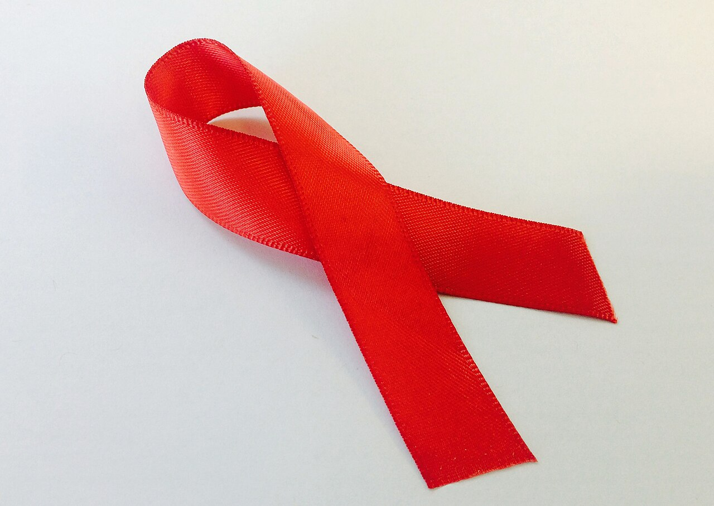

免疫失调
本期导读
过敏反应 · 自身免疫病 · 艾滋病

视频原话 · 导读3 句
- 同学们好！这节课梳理人教版选择性必修一第四章第三节——免疫失调。7.3s
- 高考常考过敏反应的机理、自身免疫病的判断，以及艾滋病的曲线和传播途径。7.7s
- 我们按七个考点梳理，每个考点都讲清楚怎么考、怎么做。5.6s
过敏反应的机理01#
组胺 → 毛细血管扩张、通透性增强、平滑肌收缩、腺体分泌增多
→ 皮肤红肿、发疹、哮喘等
→ 皮肤红肿、发疹、哮喘等
易错
过敏反应的抗体吸附在细胞表面（一般抗体主要在血清中）；第一次接触过敏原不发生过敏反应
视频原话6 句
- 考点一，过敏反应。已免疫的机体，在再次接触相同的抗原时，有时会发生引发组织损伤或功能紊乱的免疫反应，这就是过敏反应。13.0s
- 引起过敏反应的抗原物质叫做过敏原，比如花粉、室内尘土、青霉素、鱼虾等。7.9s
- 过敏原第一次进入人体，刺激机体产生抗体。这些抗体吸附在某些细胞的表面，比如皮肤、呼吸道或消化道黏膜中的某些细胞。12.5s
- 当相同的过敏原再次进入机体时，就会与吸附在细胞表面的抗体结合，使这些细胞释放组胺等物质。9.5s
- 组胺引起毛细血管扩张、血管壁通透性增强、平滑肌收缩和腺体分泌增多，于是出现皮肤红肿、发疹、哮喘等症状。11.7s
- 易错：过敏反应的抗体吸附在细胞表面，而一般的抗体主要分布在血清中；第一次接触过敏原不会发生过敏反应。10.9s
过敏反应的特点02#
有快慢之分
几分钟内出现，或几十个小时后才出现
遗传倾向和个体差异
许多过敏反应有明显的遗传倾向
预防
找出过敏原，尽量避免再次接触
考法
过敏反应 = 免疫功能过强，属于免疫防御功能异常，不是免疫功能不足
视频原话5 句
- 考点二，过敏反应的特点和预防。3.5s
- 过敏反应有快慢之分：有的在接触过敏原后几分钟内就出现，有的要在几十个小时后才出现。8.3s
- 许多过敏反应还有明显的遗传倾向和个体差异。4.8s
- 预防过敏反应的主要措施，是找出过敏原，并且尽量避免再次接触。6.5s
- 考法：过敏反应是免疫功能过强，属于免疫防御功能异常，不是免疫功能不足。7.7s
自身免疫病03#
免疫系统对自身成分发生反应，损伤组织和器官
风湿性心脏病
类风湿关节炎
系统性红斑狼疮
例：风湿性心脏病
- 感染链球菌
- →产生抗体
- →攻击链球菌
- →也攻击心脏瓣膜（结构相似）
易错
免疫功能过强、敌我不分，属于免疫自稳功能异常；治疗常用免疫抑制剂
视频原话4 句
- 考点三，自身免疫病。免疫系统对自身成分发生反应，对组织和器官造成损伤并出现症状，就叫做自身免疫病。11.6s
- 常见的有风湿性心脏病、类风湿关节炎和系统性红斑狼疮。6.2s
- 以风湿性心脏病为例：某种链球菌表面的一种抗原分子，与心脏瓣膜上的一种物质结构十分相似。感染这种链球菌后，产生的抗体在攻击链球菌的同时，也会攻击心脏瓣膜。16.3s
- 易错：自身免疫病是免疫功能过强、“敌我不分”，属于免疫自稳功能异常；治疗时常用免疫抑制剂。9.4s
免疫缺陷病04#
- 免疫缺陷病免疫功能不足或缺乏
- 先天性免疫缺陷病遗传因素
- 重症联合免疫缺陷病
- 获得性免疫缺陷病疾病和其他因素
- 艾滋病（AIDS）
- 先天性免疫缺陷病遗传因素
考法
免疫缺陷病 = 免疫功能不足：易反复感染、发生恶性肿瘤；与过敏反应、自身免疫病的“过强”相反
视频原话4 句
- 考点四，免疫缺陷病，是由机体免疫功能不足或缺乏而引起的疾病。6.9s
- 一类是由于遗传而生来就有免疫缺陷的，叫做先天性免疫缺陷病，比如重症联合免疫缺陷病。8.9s
- 另一类是由疾病和其他因素引起的，叫做获得性免疫缺陷病，最典型的就是艾滋病。8.0s
- 考法：免疫缺陷病是免疫功能不足，患者容易反复感染，甚至发生恶性肿瘤，和过敏反应、自身免疫病的“过强”正好相反。12.0s
HIV与T细胞曲线05#
RNA病毒
侵染辅助性T细胞
逆转录 → DNA
整合到染色体上
初期：HIV先升后降，T细胞先降后回升
潜伏期：HIV缓慢上升，T细胞持续下降
后期：HIV迅速上升，免疫功能几乎全部丧失
解题方法
先分三段：初期先升后降 → 潜伏期缓升缓降 → 后期HIV猛升、T细胞很低
视频原话6 句
- 考点五，艾滋病，全称获得性免疫缺陷综合征，由人类免疫缺陷病毒，也就是HIV引起。9.3s
- HIV是RNA病毒，它能识别并结合辅助性T细胞表面的受体，进入细胞，经逆转录合成DNA，整合到宿主细胞的染色体上。12.6s
- 看曲线：HIV刚侵入时浓度迅速上升；随后免疫系统摧毁大多数HIV，HIV浓度下降，T细胞数量回升。11.4s
- 但HIV不能被完全清除。经过几年的潜伏期，HIV浓度逐渐升高，辅助性T细胞数量持续下降。10.3s
- 最后，患者的免疫功能几乎全部丧失，各种感染或恶性肿瘤乘虚而入，导致死亡。8.4s
- 解题方法：曲线分三段。初期HIV先升后降；潜伏期HIV缓慢上升，T细胞缓慢下降；后期HIV迅速上升，T细胞降到很低。14.3s
艾滋病的传播与预防06#
会传播（血液、精液、乳汁等中有HIV）
性接触传播
血液传播
母婴传播
一般不会传播
握手
拥抱
共同进餐
预防
· 洁身自爱
· 不共用注射器、牙刷、剃须刀
· 输血严格检测
· 关心帮助感染者，不歧视
易错
直接死因往往是免疫功能丧失后的严重感染或恶性肿瘤，而不是HIV本身
视频原话5 句
- 考点六，艾滋病的传播途径与预防。3.8s
- HIV主要存在于感染者的血液、精液、乳汁等中，传播途径主要有三条：性接触传播、血液传播和母婴传播。11.1s
- 与感染者握手、拥抱、共同进餐，一般不会传染艾滋病。5.7s
- 预防：洁身自爱，不共用注射器、牙刷和剃须刀，输血要严格检测；对感染者要关心和帮助，不歧视。10.4s
- 易错：艾滋病患者的直接死因，往往是免疫功能丧失后发生的严重感染或恶性肿瘤，而不是HIV本身。10.5s
三类免疫失调的比较07#
| 类型 | 免疫功能 | 针对对象 | 属于哪种功能异常 | 实例 |
|---|---|---|---|---|
| 过敏反应 | 过强 | 外来过敏原 | 免疫防御 | 花粉过敏、青霉素过敏 |
| 自身免疫病 | 过强 | 自身成分 | 免疫自稳 | 风湿性心脏病、类风湿关节炎 |
| 免疫缺陷病 | 不足 | — | 防御、监视低下 | 艾滋病 |
解题方法
第一步：功能过强还是不足？第二步：针对外来物质还是自身成分？
视频原话5 句
- 考点七，把三类免疫失调放在一起比较。4.2s
- 过敏反应：免疫功能过强，针对外来的过敏原，属于免疫防御功能异常。6.9s
- 自身免疫病：免疫功能过强，攻击自身的组织和器官，属于免疫自稳功能异常。7.5s
- 免疫缺陷病：免疫功能不足或缺乏，比如艾滋病。5.1s
- 解题方法：先问“免疫功能是过强还是不足”，再问“针对的是外来物质还是自身成分”，两步就能判断。9.5s
易错速查✓
先自己判断，再点按钮查看对错与解析。
- 1第一次接触过敏原就会发生过敏反应说法错误：再次接触相同过敏原时才发生
- 2过敏反应中的抗体吸附在某些细胞表面说法正确。
- 3风湿性心脏病属于自身免疫病说法正确。
- 4HIV主要侵染细胞毒性T细胞说法错误：主要侵染辅助性T细胞
- 5握手、共同进餐会传播艾滋病说法错误：经性接触、血液、母婴传播
- 6过敏反应和自身免疫病都是免疫功能过强说法正确。
先问过强还是不足，免疫失调一判就准！
视频原话 · 易错速查5 句
- 最后，用六道判断题检验一下。3.6s
- 第一次接触过敏原就会发生过敏反应？错，再次接触相同过敏原时才发生。过敏反应中的抗体吸附在某些细胞表面？对。12.5s
- 风湿性心脏病属于自身免疫病？对。HIV主要侵染细胞毒性T细胞？错，主要侵染辅助性T细胞。10.9s
- 握手、共同进餐会传播艾滋病？错。过敏反应和自身免疫病都是免疫功能过强？对。10.1s
- 七个考点串起来：过敏反应和自身免疫病是过强，免疫缺陷病是不足，艾滋病看曲线和传播途径。掌握这些，免疫失调就能稳稳拿分！我们下期再见！15.0s
图片来源
图片来源：Wikimedia Commons —— NIAID《AIDS Awareness Ribbon》CC BY 2.0
Photo: NIAID, CC BY 2.0